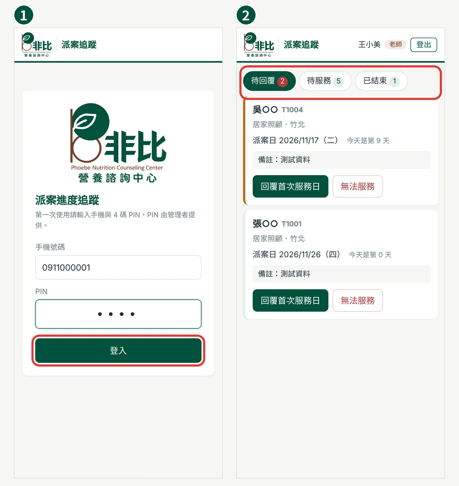
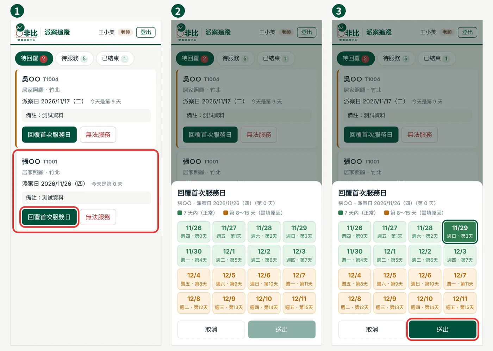
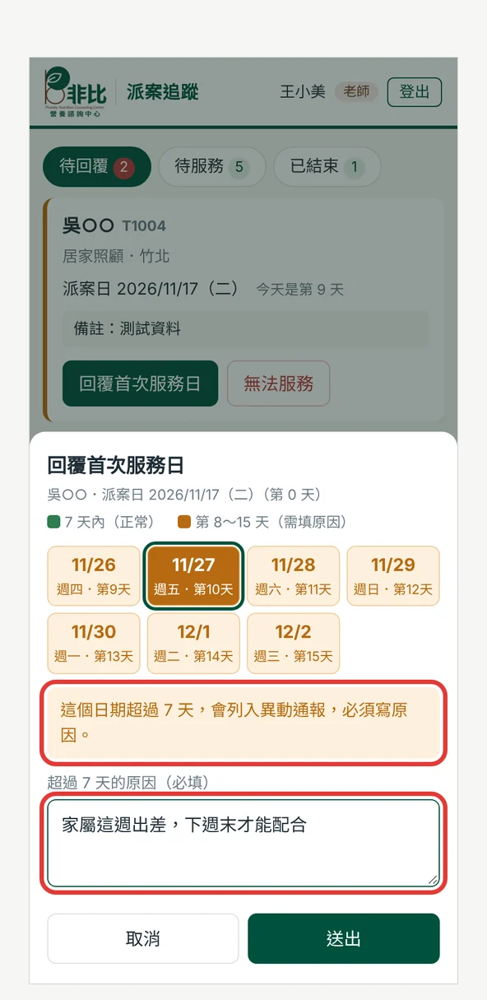
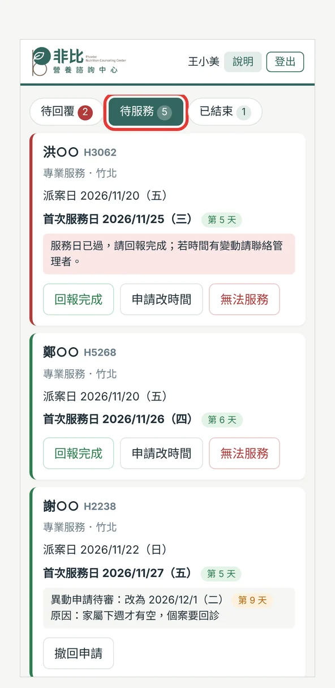
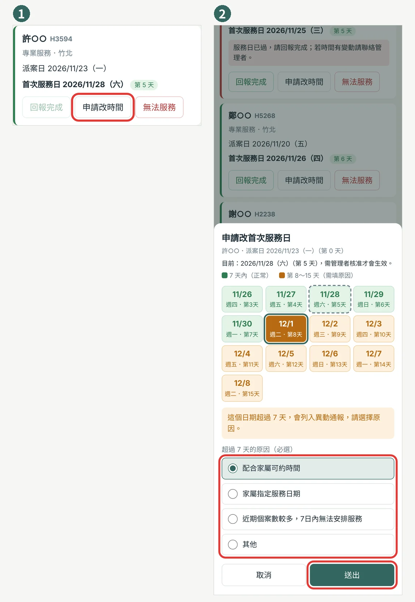
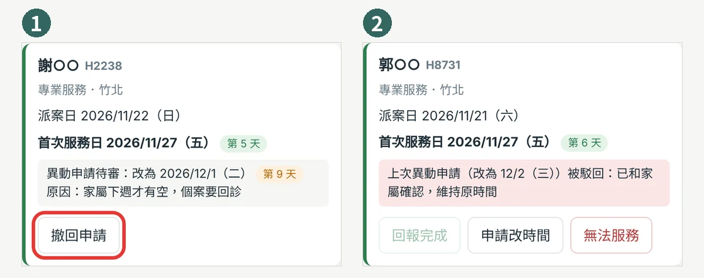
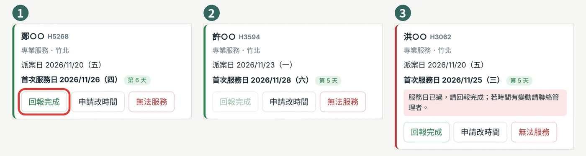
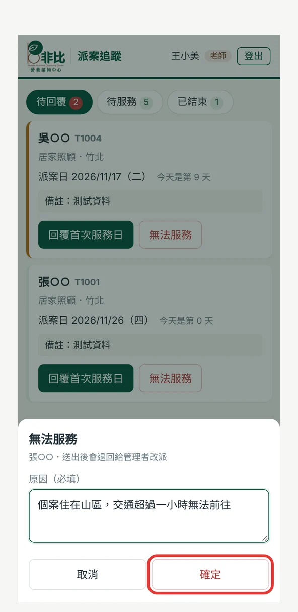
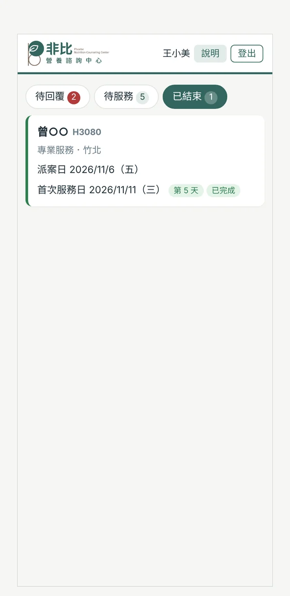

phoebe 派案追蹤 老師操作手冊
開始之前
這本手冊給接 phoebe 派案的老師使用。收到派案後，請在這裡回覆第一次可以服務的日期，服務完再回報完成。用手機就能完成所有操作。
- 網址：https://phoebe168.github.io/phoebe-dispatch/
- 帳號：你的手機號碼
- PIN：4 碼數字，由美英私下提供，請不要告訴別人
加到手機主畫面（建議做）
- iPhone：用 Safari 開啟網址 → 按下方「分享」圖示 →「加入主畫面」→「新增」。
- Android：用 Chrome 開啟網址 → 按右上角「⋮」→「加到主畫面」→「新增」。
加好之後，點主畫面上的 phoebe 圖示就能直接進入。
第一部分 快速指引
| 功能 | 步驟 |
|---|---|
| 第一次登入 | 開啟網址 → 輸入手機號碼 → 輸入 PIN → 登入 |
| 回覆首次服務日 | 待回覆 → 回覆首次服務日 → 點綠色日期 → 送出 |
| 日期超過第 7 天 | 點橘色日期 → 填寫原因 → 送出 |
| 申請改時間 | 待服務 → 申請改時間 → 點新日期 → 填寫原因 → 送出 → 等管理者核准 |
| 撤回改時間申請 | 待服務 → 撤回申請 → 確定 |
| 回報完成 | 待服務 → 回報完成 → 確定 |
| 無法服務 | 無法服務 → 填寫原因 → 確定 |
| 查看已完成的派案 | 已結束 |
| 登出 | 右上角登出 → 確定 |
第二部分 完整說明
圖中的紅框是要按的地方，上方的綠色數字是操作順序。圖中的個案都是示範資料。
1. 登入與畫面
- 打開網址。
- 輸入手機號碼和 4 碼 PIN。
- 按「登入」。
只有第一次需要登入，之後用同一支手機打開就會直接進入。
登入後上方有三個分頁：
- 待回覆：派給你、你還沒回覆日期的派案。紅色數字是筆數，請盡快處理。
- 待服務：已經回覆日期，等待第一次服務。
- 已結束：已完成，或你回報無法服務的派案。
每次操作後，右上角會出現「儲存中…」。變成「已儲存」之前，請不要關掉網頁。

2. 日期規則
派案當天算第 0 天，假日照算。系統會列出派案日起 15 天內的日期讓你選，已經過去的日子不會出現。
| 日期顏色 | 天數 | 說明 |
|---|---|---|
| 綠色 | 第 0～7 天 | 正常，直接送出 |
| 橘色 | 第 8～15 天 | 可以選，但必須寫原因，這筆會列入異動通報 |
| 沒有日期可選 | 超過第 15 天 | 請按「無法服務」說明原因 |
請盡量安排在 7 天內。
3. 回覆首次服務日
- 在「待回覆」找到派案，按「回覆首次服務日」。
- 畫面下方會列出可以選的日期，每個日期都標了星期幾、第幾天。
- 點你要的日期，再按「送出」。
送出後，這筆會移到「待服務」。

4. 日期超過第 7 天
選到橘色日期時，會出現提醒和原因欄。
- 點橘色日期。
- 在原因欄寫清楚為什麼沒辦法在 7 天內，例如「家屬出差」、「個案住院」。
- 按「送出」。
沒寫原因的話，「送出」按不下去。這個原因管理者會用來做異動通報，請寫具體一點。

5. 待服務的派案
「待服務」按服務日期排列，最近的在最上面。每筆會顯示首次服務日，以及第幾天的標籤（綠色是 7 天內，橘色是超過 7 天）。卡片下方有三個按鈕：回報完成、申請改時間、無法服務。

6. 申請改時間
已經回覆的日期要改，需要管理者核准。
- 在「待服務」找到派案，按「申請改時間」。
- 點新的日期。虛線框的是目前的日期，不能選。
- 填寫改時間的原因，這一欄不管日期幾天都要寫。
- 按「送出」。
核准之前，首次服務日還是原本的日期。

7. 等待審核與被駁回
- 等待審核：卡片會出現「異動申請待審」，寫著你申請的新日期。想改成別的日期或不改了，按「撤回申請」→「確定」，再重新申請。
- 核准：首次服務日會直接變成新日期。
- 被駁回：卡片會出現紅底的駁回原因，首次服務日維持原本的日期。有需要可以再申請一次。

8. 回報完成
第一次服務做完後，請當天回報。
- 在「待服務」找到派案，按「回報完成」。
- 確認視窗出現後按「確定」。
這筆會移到「已結束」。還沒到服務日時，「回報完成」是灰色的，按不下去。服務日已過去卻還沒回報，卡片會變成紅框，請盡快回報；如果實際上沒去服務，請聯絡管理者。

9. 無法服務
15 天內都排不出時間，或因為其他原因沒辦法接這個案，請回報無法服務。「待回覆」和「待服務」都可以按。
- 按「無法服務」。
- 寫下原因。
- 按「確定」。
這筆會退回給管理者改派，改派後就不會再出現在你的畫面。

10. 已結束
「已結束」可以看到已經完成的派案，以及你回報無法服務、等待改派的派案。這裡只能查看，不用操作。

11. 登出
一般不需要登出。要把手機借給別人，或在別人的手機上登入過時，按右上角「登出」→「確定」。登出後下次要重新輸入手機和 PIN。
12. 常見問題
- 忘記 PIN：請美英重設。重設後舊的登入會失效，要用新 PIN 重新登入。
- PIN 打錯 5 次：帳號會鎖定 15 分鐘，時間到再試，或請美英重設 PIN 立即解鎖。
- 換手機或清除瀏覽器資料：重新輸入手機和 PIN 就好。
- 按了之後跳出紅色錯誤訊息：這次操作沒有存到，畫面會還原。確認網路正常後再操作一次。
- 看不到剛派給我的案子：關掉網頁再打開，或下拉重新整理。
- 沒有日期可以選：代表已經超過派案日第 15 天，請按「無法服務」，並聯絡美英。